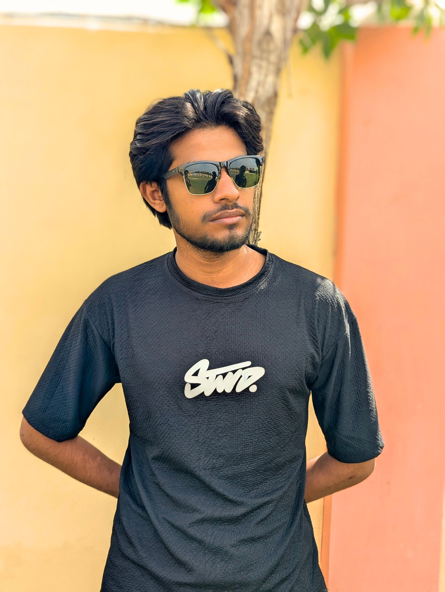

AI
Machine learning, data analysis, neural networks, AI models and intelligent systems.
I'm Yaqoob Ali — a Computer Science undergraduate exploring programming, web development, AI, and creative digital work.

My journey into technology started with curiosity and grew through experimentation. Before Computer Science became my academic path, I explored programming, websites, graphic design, video editing, and other digital tools.
I graduated from NJV Government Higher Secondary School in June 2026 on scholarship and began BS Computer Science at FAST-NUCES Karachi in August 2026.
Some are foundations, some are practical tools, and some are areas I am actively developing.
Machine learning, data analysis, neural networks, AI models and intelligent systems.
Projects from university coursework, web experiments and creative digital work.
A C-based system for student records with add, view, search, update, delete, sorting, validation, grade calculation and file handling.
Interactive quiz/testing project built as a practical web experiment.
Open live project ↗Practice project focused on input, arithmetic operators and program logic.
A small calculator project exploring logic and interactive input.
Visual communication projects exploring layout, typography, composition and digital design.
A media project combining storytelling, editing and visual communication.
The academic path that brought me to Computer Science at FAST.
BS Computer Science
Programming Fundamentals · C · Problem Solving · ComputingScholarship Student · Graduated June 2026
Academic journey and transition to Karachi.Prefect · Academic position holder
Early academic and leadership foundation.I want to understand technology, build useful things, and keep expanding what I can create.
Have a project, idea, or simply want to connect?